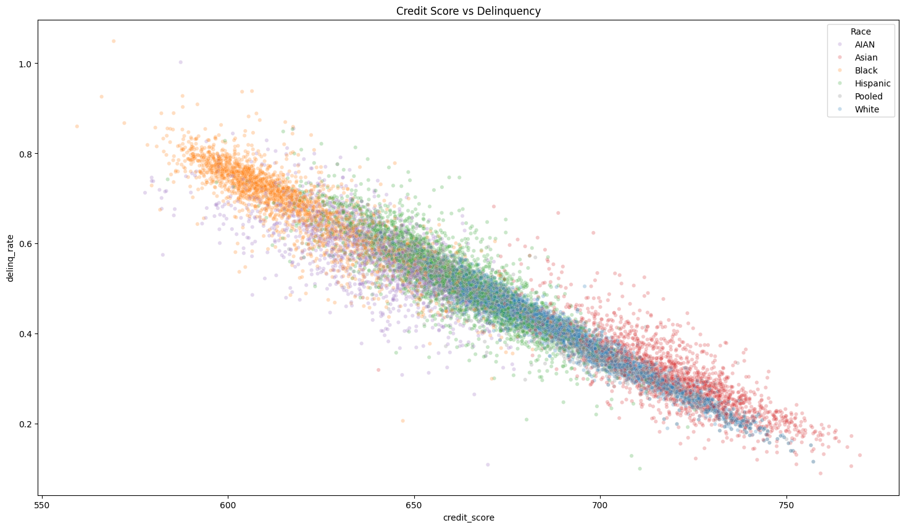
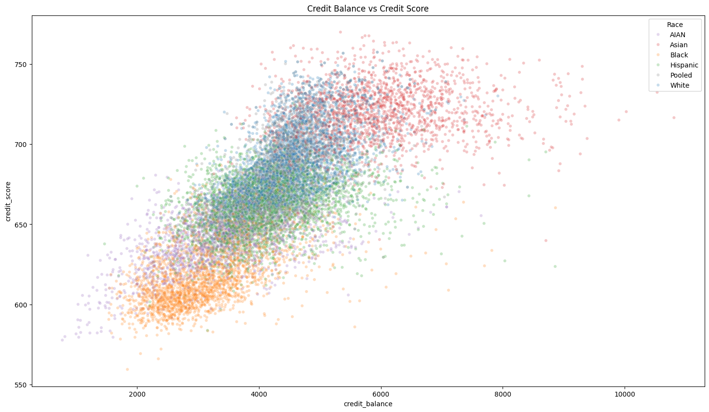
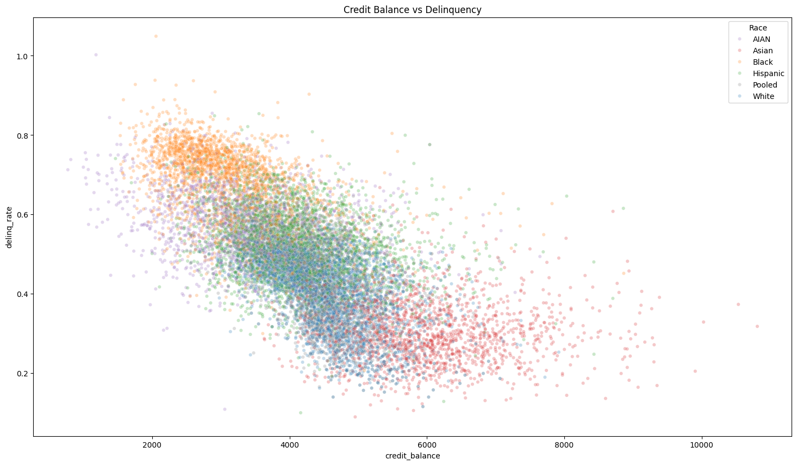
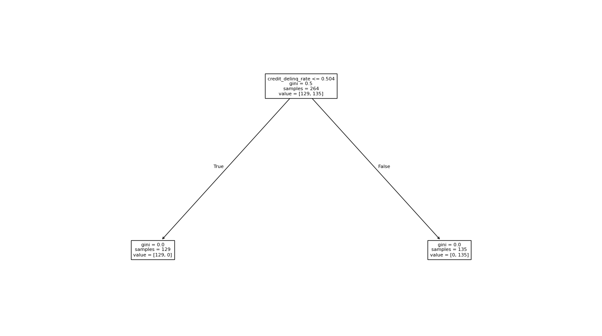
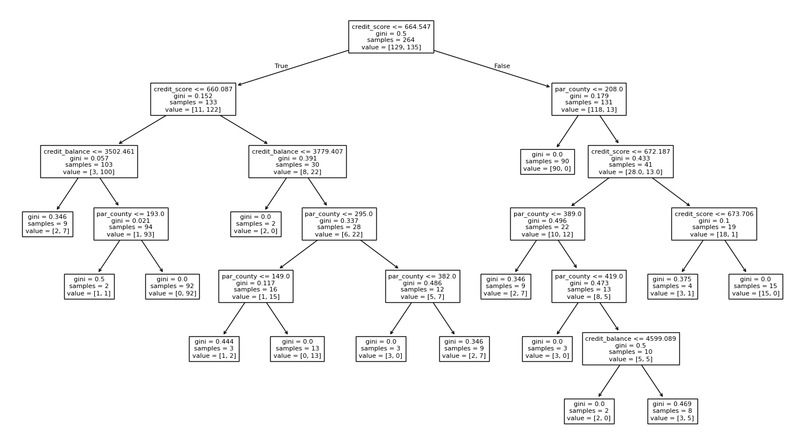

01
Cleaned and joined data
Averaged and combined credit score, balance, and delinquency CSVs into county-level analysis tables.
An exploratory data science project using Opportunity Insights data to study how credit scores, credit card balances, and delinquency rates vary across county-race subgroups.
Scroll for project details
The project asks whether county-level credit outcomes reveal meaningful patterns across geography, income background, and race.
Averaged and combined credit score, balance, and delinquency CSVs into county-level analysis tables.
Compared means, medians, ranges, and IQRs to understand spread and skew across counties.
Used scatter plots and correlations to evaluate relationships across score, balance, and delinquency.
Created decision tree models to classify high versus low delinquency and tested a harder predictor set.
The main visual shows a clear downward slope: higher average credit score is associated with lower average delinquency rate.

The association was positive, suggesting higher credit balances often appeared alongside higher average credit scores.

The relationship was less linear, but the direction helped motivate the later classification model.

This baseline model split directly on delinquency rate, making it useful for explaining the mechanics of a decision tree but less useful as a real predictor.

After removing raw delinquency from the inputs, the model had to infer high or low delinquency from credit score, credit balance, and county features.
Across county-race subgroups, higher delinquency was strongly associated with lower credit scores.
Subgroup coloring revealed visible clustering patterns that could motivate deeper work on systemic credit access disparities.
After removing raw delinquency from the predictors, the classifier reached 92% accuracy using score, balance, and county features.
The analysis showed how financial outcomes can look different once data is grouped by place and race. It also reinforced an important modeling lesson: a high accuracy score only matters when the features are chosen carefully and the model is not simply learning the answer directly.